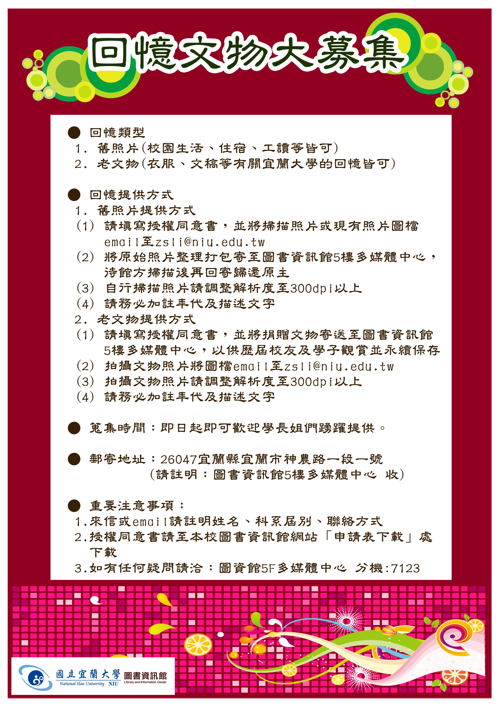

89th Anniversary Of National Ilan University
您用優美的年輪，編成一冊散發油墨清香的日歷；
年年，我都會在日曆的這一天上， 用深情的想念，祝福您的生日。
心底的祝福是為了您的壽辰，但愛卻整年伴隨您左右！
趁著明年國立宜蘭大學創校90歲，共邀學長姐們，
一起跨越時空，重返當初青春洋溢的自己。
翻閱著一張張斑駁的老照片，當初的青春歲月還依稀浮現在眼前， 或許夢境會褪色，繁花也會凋零， 但曾經擁有過的，將伴我們永存。
請學長姐們翻閱出以前珍貴的照片及文物，提供宜蘭大學紀錄與保存，將來延續歷史、傳承經驗，讓宜蘭大學的莘莘學子都能看到這些珍貴的回憶。
